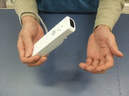
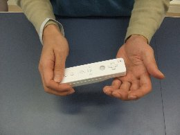

Try Playing with One Hand! NEW
Advanced Tactics
For players who have cleared all of the missions, leveled up to the highest level, collected all of the Gold Medals and have pretty much seen everything there is to see in the game, we recommend trying to play the game with one hand.
Take advantage of the Wii Remote’s unique abilities to master the ultimate playing style for Sonic and the Secret Rings!
Details and notes are summarized below, so please use them as reference.
Holding: Hold the Wii Remote sideways with both hands.

Tilting: Hold the Wii Remote sideways with both hands.


You use both hands except when swinging, when you switch to one hand.
Swing 1: Let go with the left hand, and use the right hand to tilt the Wii Remote to the right momentarily, then swing down to the left.


Swing 2: Swing with one hand as in Swing 1. Swing the Wii Remote tapping it against the left palm.


For scenes where you need to continuously swing the remote, "Swing 1" would be the best way to swing.
When input timing is severe, use "Swing 2" by narrowing the width of the swinging range.
For example, at scenes like the left image wait for the red lock-on mark to appear
As shown in the right image.
Use the one-hand-style and try the cool play style out!
« Master the Ultimate Jump | Advanced Tactics | At the end NEW »
 RSS
RSS